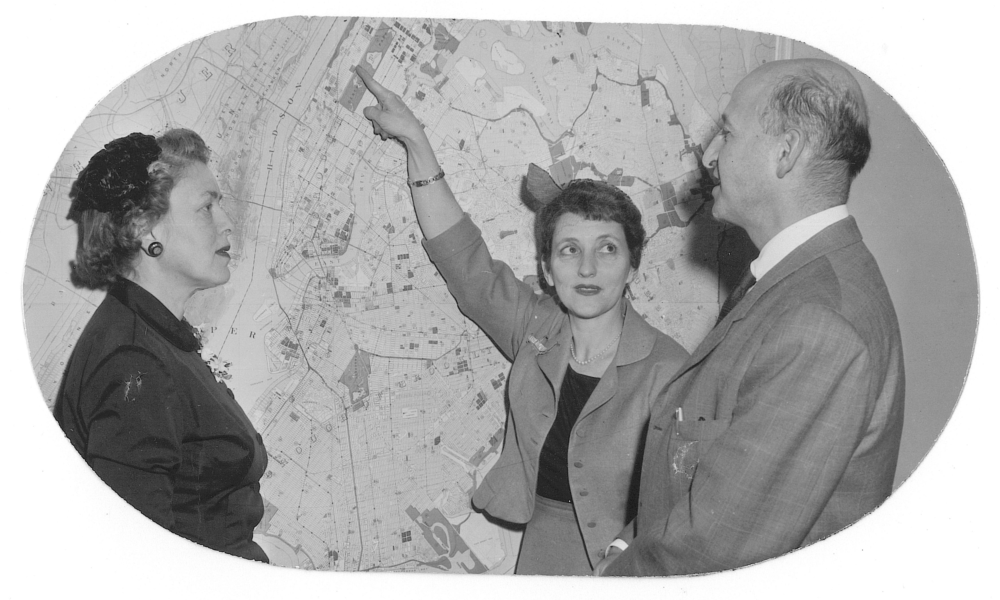

This photo was taken at the “Focus On Our Neighborhood” Conference in 1957, which was organized by the Women’s Division of the SAJ. The photo shows Mrs. Schwarz and Mrs. Cooper of the Women’s Division and James Felt, the chairman of the City Planning Committee and an SAJ member in front of an NY map).